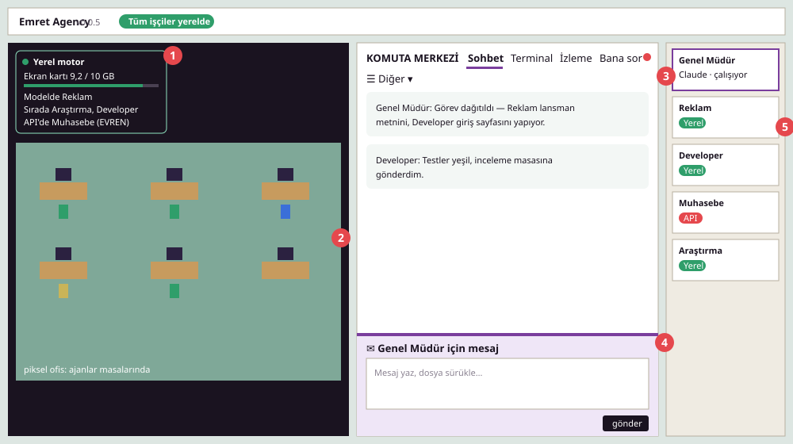

Ekran kartında, tamamen ücretsiz. Ajanlar sırayla girer; sıra değiştiğinde ajanın bağlamı diske kaydedilir ve dönüşte 1–2 saniyede geri yüklenir.llama-server veya Ollama
AÇIK KAYNAKLI & YEREL MOTOR DESTEKLİ
Ofisin senin bilgisayarında.
Emret Agency, kodlama ajanlarından oluşan otonom bir ekip kurar: Genel Müdür işi planlayıp dağıtır, işçi ajanlar piksel ofiste masalarında kod yazar. Mümkün olan tüm işler senin ekran kartındaki yerel yapay zekâ ile sıfır token ücretiyle yapılır; istersen API bağlayıp ekibini devasa projelere büyütürsün.

Developer yerel modelde birim testleri koşturuyor
Bir çalışan değil, tam donanımlı bir ofis
Tek bir kodlama ajanıyla çalışmak, tek bir çalışanla çalışmak gibidir: ona iş verirsin ve bitene kadar terminal başında beklersin. Emret Agency bunu çoklu ajanlı otonom bir yazılım şirketine dönüştürür:
1 · Sen (Yönetici)
Komuta Merkezi'nde Genel Müdür'e hedefini söylersin. Ajanların onay isteyen kritik sorularını Bana Sor panosunda yanıtlarsın.
2 · Genel Müdür (Orkestratör)
İsteğini mimari adımlara böler, işçileri göreve çağırır, görevleri dağıtır, süreci denetler ve sonucu sana özetler.
3 · İşçi Ajanlar (Uzman Ekip)
Developer, Tasarımcı, Araştırmacı, Reklamcı... Her biri kendi izole çalışma klasöründe çalışır, biten kodları İnceleme Masası'na bırakır.
Önce yerel model, en son ücretli API
Her ajan isteği akıllı bir kuyruk yöneticisinden geçer. Sistem ilk olarak donanımındaki yerel modeli kullanır; gerekmedikçe harici API'lere tek kuruş harcatmaz.
Yerel kuyrukta belirlenen süreden fazla bekleyen veya konuşması yerel model bağlamına sığmayan istek buraya taşar. Ajan baştan başlamaz.EVREN Gateway, ücretsiz kotalı uç noktalar
Ücretsiz motorlar kotaya takılırsa devreye girer. Kredisi biten veya kota hatası veren motor otomatik olarak 6 saat dinlendirilir.Claude, Gemini, ChatGPT, Kimi, NVIDIA NIM...
Claude Aboneliğinde %60 / %40 Kota Koruması
Claude aboneliği kullanıyorsanız, 5 saatlik veya haftalık kullanım %60'a ulaştığında işçi ajanlar Claude kullanımını hemen kesip yerel motora döner. Kalan %40'lık kritik kota Genel Müdür'e ayrılır; böylece ofis yönetimi asla duraksamaz.
İşçiler (Maks %60)Genel Müdür (%40 Rezerve)
Harici API kalmazsa veya internet koparsa ajanlar yerel modelle çalışmaya devam eder. İşiniz yarım kalmaz.
Bilgisayarın güçlüyse %100 ücretsiz çalış
NVIDIA ekran kartın varsa (8 GB ve üstü), Ollama ile hazır modelleri kurup anında başlayabilirsin: token ücreti yok, API anahtarı yok, veri sızıntısı yok. Projedeki hazır betik modeli tek tıkla indirip ayarlar.
| Ekran Kartı (VRAM) | Yerel Model | Kullanım Alanı |
|---|---|---|
| Yok veya 6 GB altı | — | Ajanlar API motorlarıyla çalışır (ücretsiz API'ler öncelikli) |
| 8 GB VRAM | emrettc-hafif (Qwen 4B) | Basit işler, dosya analizleri, ultra hızlı yanıt |
| 10–16 GB VRAM | emrettc-genel (Gemma 4 12B) | Önerilen: Günlük tüm kodlama ve ofis işleri |
| 24 GB ve üstü | + emrettc-kod, emrettc-analiz | 30B Kodlama ve derin analiz modelleri |
- Ollama'yı kur: ollama.com/download veya terminalde
winget install Ollama.Ollama - Optimize modeli indir: Depo klasöründe
kurulum.cmd -Yerel(Dört model için:kurulum.cmd -Yerel -TumModeller) - Uygulamada seç: Ayarlar › Yapay Zekâ Motorları › Varsayılan işçi motoru → Genel İşler (emrettc-genel)
Ayrıntılı adımlar ve hızlandırma ipuçları için: Ollama Kurulum Kılavuzu.
Motorların her ayrıntısı kontrol altında
Ofis ekranındaki canlı panel sayesinde hangi ajanın yerelde, hangisinin API'de çalıştığını, kotaların durumunu ve donanım kullanımını anlık takip edersin:
- Ekran kartı belleği ve VRAM takibi: Modelin belleğe sığıp sığmadığını anlık izler.
- Dahili hız testi (Benchmark): Donanımının okuma/yazma hızını "Hızlı / Orta / Yavaş" olarak ölçer.
- Kullanım sırası: Yerel modele hangi ajanın önce gireceğini sürükle-bırak ile belirlersin.
- Krediler ve kotalar: Claude aboneliğinin 5 saatlik ve haftalık yüzdesi, %60 limitiyle grafiklenir.
- Sabah raporu: Her sabah Gelen Kutusu'na ve Telegram'a motorların sağlık durumu ve token harcamaları gelir.
- SafeStorage şifreleme: API anahtarları işletim sistemi seviyesinde şifrelenir; asla düz metin kaydedilmez.

Ücretsiz başla, dilediğinde API bağla
Emret Agency tek bir kuruş harcamadan yerel modelle çalışabilir. Daha güçlü genel zekâya ihtiyaç duyduğunuzda dilediğiniz sağlayıcıyı tek tıkla eklersiniz:
- Yerel Model (Ollama & llama-server)
- Kendi bilgisayarınızda; sınırsız, sıfır token ücretiyle çalışan ana motor.
- Google Gemini (Flash & Pro)
- Hazır uç nokta; en son gemini-flash-latest ve gemini-pro-latest modelleriyle yüksek hız.
- OpenAI / ChatGPT
- GPT-4o, GPT-5 veya Codex CLI ile doğrudan ChatGPT aboneliğiniz üzerinden çalışma imkanı.
- Moonshot Kimi & NVIDIA NIM
- Anthropic uyumlu Kimi ve DeepSeek destekli NVIDIA NIM hazır entegrasyonları.
- EVREN LLM Gateway
- Kurumsal veya ücretsiz açık kaynak yapay zekâ uç noktaları için tam uyumluluk.
- Özel OpenAI / Anthropic Uç Noktaları
- Kendi sunucunuz, LM Studio veya vLLM adresini yazarak dilediğiniz modeli ekleyebilirsiniz.

Ofisini ve ekibini dilediğin gibi şekillendir
Projeniz büyüdükçe ofisiniz de büyür. Çalışan ajanları durdurmadan ofisi, rolleri ve kuralları canlı olarak güncelleyebilirsiniz:
- Piksel Ofis Düzenleyici: Masaları sürükleyip bırakarak kendi ofis planınızı çizin.
- Çoklu Proje Yönetimi: Tek çatı altında birden çok müşteri projesi açın; her projenin çalışma alanı, görevleri ve hafızası ayrı tutulur.
- Riskli İşlem Onay Kapısı: Git push, veritabanı silme, toplu dosya silme gibi riskli komutlarda ajanlar senden onay ister.
- Görsel Temalar: Açık/koyu mod, özel renk paletleri ve kendi şirket logonuz.
- Mobil Telegram Botu: /durum, /ozet komutları ve onay bekleyen sorular doğrudan telefonunuza düşer.
Yerel ama rekor hızda
Yerel modellerde en büyük vakit kaybı, sıra başka ajana geçtiğinde ajanın 50 bin tokenlık konuşma geçmişini GPU'ya baştan okutmaktır. Emret Agency diske kaydedilen ajan belleği (slot cache) ile bu süreyi sıfırlar:
| Ölçüm | Standart Kurulum | Emret Agency |
|---|---|---|
| Ajan değişince 51 bin tokenlık hafızaya dönüş | ~30 saniye (baştan okur) | ~2 saniye (diskten anında yükler) |
| Bir ajan isteminin optimize boyutu | ~15 bin token | ~7,9 bin token |
| İstem okuma hızı (Prompt eval) | 1100–1300 token/sn | 1500–2100 token/sn |
| VRAM bellek tüketimi | 9,7 GB | 9,2 GB (q8 önbellek) |
Ölçümler: RTX 3080 10 GB, Gemma 4 12B, 64K bağlam boyutu. Uygulama içerisindeki Hız Testi kendi bilgisayarınızı ölçer.
Öne çıkan tüm yetenekler
- Çoklu CLI Ajan Desteği
- Claude Code, OpenCode, Codex, Crush, pi ve dilediğiniz CLI ajanı aynı anda tek ofiste.
- Devam Noktası (devam.md)
- Ajanlar kaldığı yeri küçük notlarla hatırlar; oturum kapansa bile geçmişi baştan okumadan işine devam eder.
- Bana Sor & Gelen Kutusu
- Ajanların mimari soruları ve onay bekleyen kararları menüde kırmızı rozetle toplanır.
- İnceleme Masası (Review Desk)
- Ajanların git dallarını inceler; tek tıkla farkları (diff) görür, testleri çalıştırır ve merge/revert yaparsın.
- Çoklu Proje Çalışma Alanı
- Her proje için ayrı bir izole ofis kopyası açılır; bütçe ve görevler birbirine karışmaz.
- Güvenli Kasa (SafeStorage)
- Tüm API anahtarlarınız işletim sistemi düzeyinde şifreli saklanır, repoya ya da diske düz metin yazılmaz.
- Telegram Bildirimleri
- Ofisin durumu, sabah özetleri ve acil sorular doğrudan cebinizdeki Telegram botuna gelir.
- Tek Tıkla Windows Dağıtımı
- npm run dist:win ile projeyi kurulabilir bir masaüstü (.exe) programı haline getirebilirsiniz.
Arayüz turu

- Yerel Motor Paneli — Ekran kartı belleği, kuyrukta bekleyenler, API'ye taşanlar.
- Piksel Ofis — Masalarında çalışan ajanlar ve anlık durum balonları.
- Komuta Merkezi — Sohbet, Terminal, Canlı İzleme ve Bana Sor paneli.
- Mesaj ve Dosya Kutusu — Sürükle-bırak dosya paylaşımı ve ajan iletişim hattı.
- Ajan Kartları — Yeşil (Yerel) / Kırmızı (API) rozetleriyle çalışan personelin listesi.
Hızlı Kurulum ve Çalıştırma
Windows 10/11 için sıfırdan kurulum. Kurulum betiği gerekli araçları otomatik kontrol eder.
-
1. Depoyu İndirin
GitHub deposunu bilgisayarınıza klonlayın ve klasöre girin:
git clone https://github.com/emret-agency/emret-agency.git cd emret-agency
-
2. Ollama'yı Kurun (Ücretsiz Yerel Motor — İsteğe Bağlı)
Ekran kartınız 8 GB ve üstü ise kurun; yoksa bu adımı atlayıp doğrudan API ile çalışabilirsiniz.
winget install Ollama.Ollama
-
3. Kurulum Betiğini Çalıştırın
Yerel modelle birlikte kurmak için -Yerel parametresi ekleyin (Gemma 4 12B modelini otomatik indirir):
kurulum.cmd -Yerel
-
4. Uygulamayı Başlatın
Açılan terminal penceresi uygulama açık olduğu sürece açık kalmalıdır:
baslat.cmd
Ekran Görüntüleriyle Adım Adım Kurulum Rehberi
API anahtarlarını girme, yeni çalışma alanı klasörü oluşturma ve ilk işi vermeyi anlatan resimli rehber:
Ayrıntılı adımlar, API bağlama ve program olarak (.exe) paketleme: Kurulum Kılavuzu (KURULUM.md) · Ollama Yerel Model Rehberi
Sıkça Sorulan Sorular
Çalıştırmak için para veya token ödemem gerekir mi?
Hayır! Yerel modelle (Ollama veya llama-server) çalıştığınızda sıfır maliyetle sınırsız kod yazdırabilirsiniz. Harici API'ler yalnızca siz bir API anahtarı eklediğinizde veya yerel model bağlamı aşıldığında devreye girer.
Hangi ekran kartına ihtiyacım var?
Önerilen genel model (Gemma 4 12B) 10 GB ekran kartına tam sığar. 8 GB VRAM kartlarda hafif model (Qwen 4B), 24 GB kartlarda ise kod ve analiz modelleri rahatça çalışır. Ekran kartınız yoksa Ollama kurmanıza gerek yoktur; doğrudan ücretsiz veya ücretli API'lerle çalışabilirsiniz.
Uygulamayı tek bir kurulabilir program (.exe) haline getirebilir miyim?
Evet! Depo klasöründe npm run dist:win komutunu çalıştırarak dist/ klasöründe çift tıklanarak kurulan Windows kurulum dosyasını (.exe) üretebilir ve başkalarına dağıtabilirsiniz.
Projelerim ve API anahtarlarım güvende mi?
Kesinlikle evet. Emret Agency verilerinizi herhangi bir harici buluta veya telemetri sunucusuna göndermez. API anahtarlarınız Windows DPAPI (Electron safeStorage) ile şifrelenir; kodlarınız yalnızca seçtiğiniz çalışma klasöründe yerel olarak tutulur.
İnternet bağlantım olmadan çalışır mı?
Evet. Yerel yapay zekâ modeli ve işçi ajanlar tamamen çevrimdışı (offline) çalışabilir. Genel Müdür'ü de yerel motora bağlarsanız ofisin tamamı internetsiz bir dağ evinde bile kod yazmaya devam eder.
Ajanlar bilgisayarıma veya kodlarıma zarar verebilir mi?
Hayır, dahili Risk Kapısı (Risk Gate) sayesinde ajanlar toplu dosya silme, git push, veritabanı drop gibi riskli komutları çalıştırmadan önce terminalde veya Bana Sor sayfasında sizden açıkça onay ister.
Ofisi birlikte büyütelim
Emret Agency %100 açık kaynak ve özgür bir projedir. Geliştirmeyi desteklemek, yeni yerel model optimizasyonlarına ve yeni özelliklere katkıda bulunmak için bağış yapabilirsiniz.